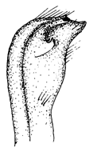

Fiddler Crabs
Uca princeps
Princely Fiddler Crab
Type
Information
Photos
Video
Art
References
Species List
Type Description
Gelasimus princeps
Smith, S.I. (1870) Notes on American Crustacea. No. 1. Ocypodoidea.
Transactions of the Connecticut Academy of Arts and Science
2:113–176.
Information
Subgenus
Uca
Common Names
Princely FiddlerCrab, Greater Mexican Fiddler Crab
Synonyms, Alternate Spellings, & Name Forms
Gelasimus princeps
,
Uca (Uca) princeps
,
Uca (Uca) princeps princeps
,
Uca princeps
,
Uca princeps princeps
Geographic Range
Eastern Pacific: Mexico to Peru
Download SVG line map of ranges.
Map data derived from:
Brusca (1980)
;
Crane (1975)
;
Hendrickx (1984)
External Links
Encyclopedia of Life
Wikipedia
iNaturalist
NCBI Taxonomy Browser/Genbank
GBIF
Photos
Video
Male
Uca princeps
waving
1:26 min., 352 x 240, MP4
Male
Uca princeps
waving (
Uca beebei
in background)
3:13 min., 352 x 240, MP4
Art

References
Altevogt, R. (1957) Untersuchungen zur Biologie, Ökologie und Physiologie Indischer Winkerkrabben.
Zeitschrift für Morphologie und Ökologie der Tiere
46(1):1–110.
Altevogt, R. (1969) Ein sexualethologischer Isolationsmechanismus bei sympatrischen
Uca
-Arten (Ocypodidae) des Ostpazifik.
forma et functio
1:238–249. {An ethological reproductive isolation mechanism in sympatric species of
Uca
(Ocypodidae) of the Eastern Pacific}
Altevogt, R. (1972) Physiological inter-relations of display and locomotion in fiddler crabs: An evolutionary aspect.
Journal of the Marine Biological Association of India
14(2):456–467.
Barnwell, F.H. (1968) The role of rhythmic systems in the adaptation of fiddler crabs to the intertidal zone.
American Zoologist
8(3):569–583.
Barnwell, F.H., and J.H. Stillman (1990) Differences in daily and tidal rhythms in populations of the fiddler crabs
Uca princeps
and
U. monilifera
.
American Zoologist
30(4):138A.
Beinlich, B., and H.-O. von Hagen (2006) Materials for a more stable subdivision of the genus
Uca
Leach.
Zoologische Mededelingen
80(4):9–32.
Bott, R. (1954) Dekapoden (Crustacea) aus El Salvador. 1. Winkerkrabben (
Uca
).
Senckenbergiana biologica
35(3–4):155–180.
Bott, R. (1973) Die verwandtschaftlichen Beziehungen der
Uca
-Arten (Decapoda: Ocypodidae).
Senckenbergiana biologica
54(4–6):315–325.
Brusca, R.C. (1973)
A Handbook to the Common Intertidal Invertebrates of the Gulf of California
. Tucson, Arizona: University of Arizona Press.
Brusca, R.C. (1980)
Common Intertidal Invertebrates of the Gulf of California
. Second Edition. Tucson, Arizona: University of Arizona Press.
Buitendijk, A.M. (1950) Note on a collection of Decapoda Brachyura from the coasts of Mexico, including the description of a new genus and species.
Zoologische Mededelingen
30(17):269–282.
Cano, G. (1889) Viaggio della R. Corvetta Vettor Pisani attorno al globo. — Crostácei Brachiuri ed Anomuri.
Bollettino della Società di Naturalisti in Napoli
3(2):169–268.
Crane, J. (1941) Eastern Pacific Expeditions of the New York Zoological Society. XXVI. Crabs of the genus
Uca
from the west coast of Central America.
Zoologica NY
26:145–208.
Crane, J. (1944) On the color changes of fiddler crabs (genus
Uca
) in the field.
Zoologica NY
29:161–168.
Crane, J. (1947) Eastern Pacific expeditions of the New York Zoological Society. XXXVIII. Intertidal brachygnathous crabs from the west coast of tropical America with special reference to ecology.
Zoologica
32(2):69–95.
Crane, J. (1957) Basic patterns of display in fiddler crabs (Ocypodidae, Genus
Uca
).
Zoologica NY
42:69–82.
Crane, J. (1975)
Fiddler Crabs of the World: Ocypodidae: Genus Uca
. Princeton, NJ: Princeton University Press.
Dominguez Alonso, P. (2008) A new fiddler crab (genus
Uca
, Ocypodidae) from the Plio-Pleistocene from the Pacific coast of Honduras.
Ameghiniana
45(4):663–676.
Garth, J.S. (1957) Reports of the Lund University Chile expedition 1948-1949. No. 29. The Crustacea Decapoda Brachyura of Chile.
Lunds Universitets Årsskrift
53(7):1–128.
Garth, J.S. (1960) Distribution and affinities of the brachyuran Crustacea.
Systematic Zoology
9(3):105–123.
Kerstitch, A. (1989)
Sea of Cortez Marine Invertebrates: A Guide for the Pacific Coast, Mexico to Ecuador
. Monterey, CA: Sea Challengers.
Kingsley, J.S. (1880) Carcinological notes, No. II.-Revision of the Gelasimi.
Proceedings of the Academy of Natural Sciences of Philadelphia
1880(1):135–155.
Lockington, W.N. (1877) Remarks on the Crustacea of the west coast of North America, with a catalogue of the species in the museum of the California Academy of Sciences.
Proceedings of the California Academy of Sciences
7(1):145–156.
Maccagno, T. (1928) Crostacei Decapodi. Le specie del genere
Uca
Leach conservate nel Regio Museo Zoologico di Torino.
Bollettino dei Musei di Zoologia ed Anatomia comparata della R. Università di Torino
41(11):1–52.
Maloney, C.T., L.E. Burnett, and P.L. deFur (1989) Branchial water acid-base status in intertidal crabs during air exposure.
American Zoologist
29(4):104A.
McMahon, B.R., and W.W. Burggren (1988) Respiration. Pp. 249–297 in
Biology of the Land Crabs
, W.W. Burggren and B.R. McMahon, eds. Cambridge: Cambridge University Press.
Oliveira, L.P.H.d. (1939) Contribuição ao conhecimento dos crustaceos do Rio de Janeiro. Genero
Uca
(Decapoda: Ocypodidae).
Memórias do Instituto Oswaldo Cruz
34(1):115–148.
Ortmann, A.E. (1897) Carcinologische Studien.
Zoologische Jahrbücher. Abtheilung für Systematik, Geographie und Biologie der Thiere
10(3):258–372.
Peters, H.M. (1955) Die Winkgebärde von
Uca
and
Minuca
(Brachyura) in vergleichend-ethologischer, -ökologischer und -morphologisch-anatomischer Betrachtung.
Zeitschrift für Morphologie und Ökologie der Tiere
43(5):425–500.
Rathbun, M.J. (1911) The stalk-eyed Crustacea of Peru and the adjacent coast.
Proceedings of the United States National Museum
38(1766):531–620.
Rathbun, M.J. (1918) The grapsoid crabs of America.
United States National Museum Bulletin
97:1–461.
Rathbun, M.J. (1924) Expedition of the California Academy of Sciences to the Gulf of California in 1921. Crustacea (Brachyura).
Proceedings of the California Academy of Sciences. Fourth Series
13(23):373–379.
Salmon, M., and K.W. Horch (1972) Acoustic signalling and detection by semiterrestrial crabs of the family Ocypodidae. Pp. 60–96 in
Behavior of Marine Animals Volume 1: Invertebrates
, H.E. Winn and B.L. Olla, eds., Volume 1. New York: Plenum Press.
Saussure, H.d. (1853) Description de quelques crustacés nouveaux de la côte occidentale du Mexique.
Revue et Magasin de Zoologie pure et appliquée. Série 2
5:354–368.
Smith, S.I. (1870) Notes on American Crustacea. No. 1. Ocypodoidea.
Transactions of the Connecticut Academy of Arts and Science
2:113–176.
Smith, S.I. (1871) List of the Crustacea collected by J. A. McNiel in Central America.
Annual Reports of the Trustees of the Peabody Academy of Science
1869:87–98.
von Hagen, H.-O. (1968) Studien an peruanischen Winkerkrabben (
Uca
).
Zoologische Jahrbücher. Abteilung für Systematik, Ökologie und Geographie der Tiere
95(2):395–468. {Studies of Peruvian fiddler-crabs (
Uca
)}
von Hagen, H.-O. (1970) Verwandtschaftliche Gruppierung und Verbreitung der Karibischen Winkerkrabben (Ocypodidae, Gattung
Uca
).
Zoologische Mededelingen
44(15):217–235.
von Hagen, H.-O. (1970) Zur Deutung langstielger und gehörnter Augen bei Ocypodiden (Decapoda, Brachyura).
forma et functio
2:13–57. {On the significance of elongated and horned eyes in Ocypodid crabs}
von Martens, E. (1872) Ueber Cubanische Crustaceen nach den Sammlungen Dr. J. Gudlach's.
Archiv für Naturgeschicthe
38(1):77–147.
Young, C.G. (1900)
The stalk-eyed Crustacea of British Guiana, West Indies and Bermuda
. London: J. M. Watkins.
{kind=link}